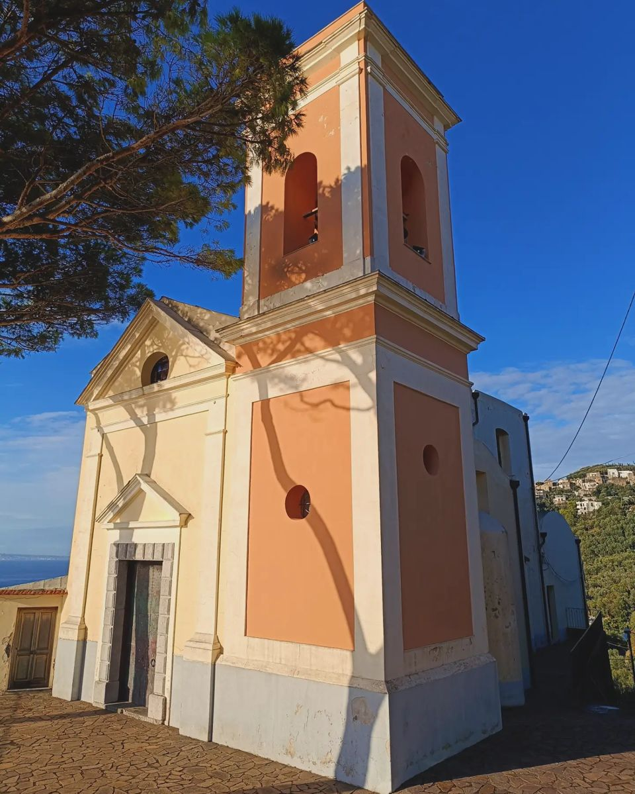

Le grand jour
Nous nous réjouissons de vous accueillir à Massa Lubrense, en Italie, pour célébrer ce moment avec nous.
- 15h30Accueil des invitésParrocchia di Sant'Andrea Apostolo, Massa Lubrense
- 16h30Cérémonie religieuse catholique
- Après la cérémonieRéceptionVin d'honneur, dîner en plein air et soirée dansante au Palazzo Raja
Où nous retrouver

Parrocchia di Sant'Andrea Apostolo
Via Nastro d'Oro 8, Massa Lubrense
Serez-vous des nôtres ?
Merci de nous faire part de votre réponse avant le 31 mars 2027.
Questions fréquentes
Quelle tenue porter ?
Une tenue élégante, de type cocktail chic.
Pour la cérémonie religieuse, nous vous demandons de prévoir une tenue qui couvre les épaules et les genoux (un châle ou une veste légère fera très bien l'affaire).
Où se garer ?
Faute de places de parking à proximité de l'église, vous êtes invités à vous garer directement au Palazzo Raja. Le transport entre le lieu de la réception et le lieu de la cérémonie sera assuré par nos soins.
Comment se rendre sur place ?
Si vous souhaitez louer une voiture à Naples, pour vous éviter tout désagrément nous vous recommandons de la louer chez bullyrent.it.
Si vous comptez vous rendre à Sorrento, nous vous recommandons de prendre le ferry depuis le port de Naples. Pour les plus aventureux, vous pouvez prendre le train régional (Circumvesuviana) depuis la gare centrale de Naples, mais assurez-vous de n'avoir rien d'urgent de prévu dans la journée avant de vous lancer.
Pour vous rendre à Massa Lubrense depuis Sorrento, vous pouvez prendre le bus ou un taxi.
Les enfants sont-ils les bienvenus ?
Oui, mais aucun baby-sitter n'est prévu pour les superviser : ils restent sous la responsabilité de leurs parents.
Peut-on photographier pendant la cérémonie ?
Nous souhaitons que vous viviez ce moment pleinement avec nous : merci de ranger vos appareils pendant la cérémonie (notre photographe s'en occupe !).
N'oubliez pas également de mettre votre téléphone sur silencieux avant d'entrer dans l'église.
Un cadeau de mariage ?
Votre présence est le plus beau cadeau que vous puissiez nous faire et nous ne vous demandons rien de plus. Si vous souhaitez toutefois nous offrir quelque chose, une cagnotte en ligne nous aidera à financer notre voyage de noces. Le lien sera bientôt disponible ici.
Besoin d'un coup de main pour le voyage ou le séjour, ou de plus d'informations ?
N'hésitez pas à faire appel à nous, nous nous ferons une joie de vous venir en aide.